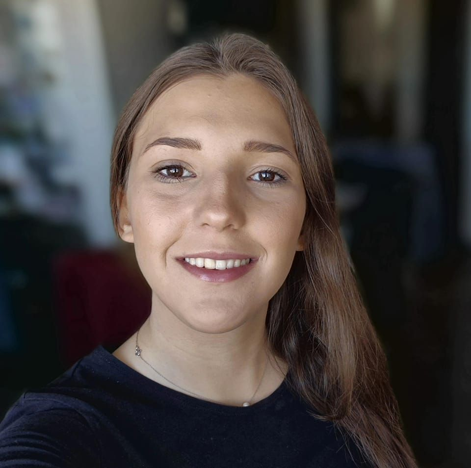

<!DOCTYPE html>
<html lang="ro">
<head>
    <meta charset="UTF-8">
    <meta name="viewport" content="width=device-width, initial-scale=1.0">
    <title>Pagina Principală</title>
    
    <link rel="stylesheet" href="style.css"> 
    <script src="https://cdn.jsdelivr.net/npm/bootstrap@5.3.2/dist/js/bootstrap.bundle.min.js"></script>
    <link rel="stylesheet" href="../Header/header.css">
    <link rel="stylesheet" href="../Footer/footer.css">
    <link rel="stylesheet" href="../CSS/despre.css">
</html>
<body>
    <div id="header-placeholder"></div>
    <main>
        <section class="bg-dark text-white py-5">
                <h2 class="text-center mb-5">Despre mine</h2>
                <div class="container">
                    <div class="row">
                        <div class="col-lg-5 " >
                            
                        </div>
                        <div class="col-lg-5 offset-lg-2">
                            <h3 class="mb-3">Buna, eu sunt Maria!</h3>
                            <p>Iubesc drumețiile și timpul petrecut în natură. Îmi place să însoțesc oameni pe trasee faine, în ritm potrivit, cu pauze, povești și grijă pentru siguranță. Dacă vrei un partener de drum pe Via Transilvanica (sau alte trasee), scrie-mi!
                                Hai pe potecă!
                            </p>
                            <div class="mt-4">
                            <a href="contact.html" class="btn btn-custom-contact btn-md">Contactează-mă</a>
                            </div>
                            
                        </div>
                        
                        
                </div>
        </section>
        <section class="bg-light py-5">
    <div class="container">
        <h2 class="text-center mb-5">Pasiunile mele</h2>
        <div class="row g-4"> 
            
            <div class="col-lg-4 col-md-6">
                <div class="pasiuni h-100 p-4">
                    <h3>Drumeții</h3>
                    <p>Natura este locul unde mă simt cel mai bine, așa că profit de orice ocazie pentru o drumeție. Fie că mă plimb prin pădure, pe dealuri sau pe poteci de munte, liniștea de afară mă ajută să-mi adun gândurile și să mă relaxez.</p>
                </div>
            </div>

            <div class="col-lg-4 col-md-6">
                <div class="pasiuni h-100 p-4">
                    <h3>Schiul</h3>
                    <p>Schiul este pentru mine doza de adrenalină și libertate de care am nevoie în fiecare iarnă. Nimic nu se compară cu senzația de pe pârtie, indiferent de cât de abruptă e panta. Este sportul care mă deconectează total și mă încarcă cu energie pozitivă.</p>
                </div>
            </div>

            <div class="col-lg-4 col-md-6">
                <div class="pasiuni h-100 p-4">
                    <h3>Lucruri handmade</h3>
                    <p>Îmi place la nebunie să creez lucruri cu mâinile mele, fie că împletesc, cos sau meșteresc tot felul de decorațiuni. Pentru mine, handmade-ul este un fel de terapie.</p>    
                </div>
            </div>

            <div class="col-lg-4 col-md-6">
                <div class="pasiuni h-100 p-4">
                    <h3>Fotografia</h3>
                    <p>Am descoperit că fotografia merge mână în mână cu ieșirile mele în natură și cu micile mele proiecte creative. Pentru mine, fotografia este modul prin care păstrez vie o emoție sau un moment frumos pe care l-am trăit, exact așa cum a fost.</p>
                </div>
            </div>

            <div class="col-lg-4 col-md-6">
                <div class="pasiuni h-100 p-4">
                    <h3>Documentare și filme</h3>
                    <p>Sunt o mare pasionată de documentare, în special de cele de la Astra Film Festival. Am reușit să văd chiar și 26 de documentare într-o singură săptămână la festival. Mă atrag poveștile reale care mă provoacă să învăț ceva nou.</p>
                </div>
            </div>

            <div class="col-lg-4 col-md-6">
                <div class="pasiuni h-100 p-4">
                    <h3>Călătorii scurte</h3>
                    <p>Ador micile escapade de weekend și călătoriile scurte, pentru că sunt modul perfect de a rupe rutina fără prea multă planificare. Fie că descopăr un oraș nou sau un sat pitoresc.</p>    
                </div>
            </div>

        </div> 
    </div> 
</section>
    </main>
    <div id="footer-placeholder"></div>   
    <script src="../js/index.js"></script>
</body>
</html>